Badminton is a sports racket that is played with a shuttlecock or birdie as a projectile and where the players are separated by a net that divides the court into two equal parts. Points are scored by landing the shuttle on your opponent’s side of the court. Badminton is played as an outdoor sport in several parts of the world. However, to fully enjoy its potential, badminton should be played indoors where the wind cannot compromise the flight of the shuttle
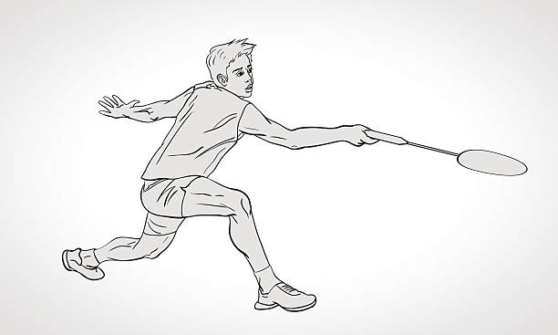
Brief History
Badminton appears to be an evolution of a game called battledore and shuttlecock, which origins go way back in time. Badminton, as we know it today, was, according to most sources, invented and developed by the British in the middle of the 19th century. The most widespread theory is that it was invented in British India and then went back to England, where it became popular very fast.
The name, as the precise origin, is not clear either. However, the most plausible theory says that the game came from Badminton House in Gloucestershire, England, a house owned by the Dukes of Beaufort since the 17th century. According to the theory, badminton became very popular in that location during its inception, with badminton matches being organized there.
Equipment
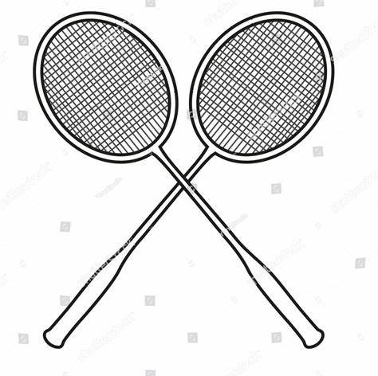
Racket
A racket is one of the few mandatory items in order to play badminton. As we describe in detail in our badminton measurement post, a racket must follow very strict guidelines to be considered a badminton racket in a professional setting.
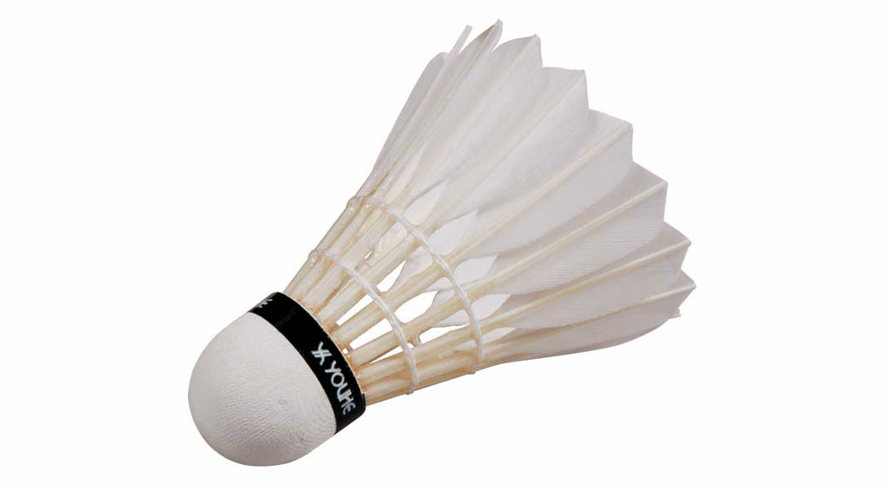
Shuttle (or birdie)
The second mandatory item is the shuttle. This is what distinguishes badminton from all the other racket sports and what makes it so unique. The shuttles used in competitions are called feathered shuttles and they are not cheap to buy, especially because they do not last that long.
There is a different kind of shuttle, called a non-feathered shuttle, which is cheaper and much more durable. This one doesn’t have feathers but has a plastic body that resembles fairly well the flight of the feathered shuttles.
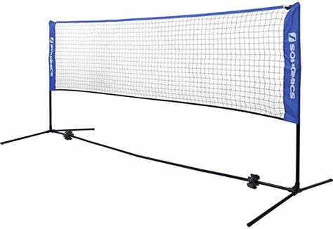
Net and Poles
A net (with the poles) is also a mandatory item. Even though you can still hit the shuttle around without the net, this equipment provides certain limitations to the shots that make the game more realistic and fun.
Shoes and Sports Outfit
Shoes are, in our opinion, the third most important equipment to buy after rackets and shuttles. This is because badminton can be a very demanding sport for your feet and having proper shoes will save you from a lot of discomfort and injuries.
It is not as important as the shoes because it will not prevent injuries, but it will certainly improve your comfort while playing. Having a sportive outfit will allow you to move faster and more comfortable around the court and hit the shuttle with ease.
Where to play Badminton
Professional tournaments are played indoors, under a very controlled environment, and usually on a special surface that is installed on top of the sports hall flooring, called a badminton mat. For recreational badminton, it is still recommended to play indoors because otherwise, the wind becomes an unwelcome guest. Having said that, there are a lot of people that practice and enjoy playing badminton outdoors so, if you do not have a sports hall nearby or you simply enjoy playing outside.
Know how to Play
Who serves first
In an official tournament, the umpire will toss a coin as it is done in most sports. Whoever has chosen the winning side can choose either to serve or receive. In more unofficial environments or during training, the shuttle is usually used. You throw the shuttle up and, when it lands, whichever side the cork of the shuttle is pointing towards, is the side that decides if it wants to serve or not. In more unofficial environments or during training, the shuttle is usually used. You throw the shuttle up and, when it lands, whichever side the cork of the shuttle is pointing towards, is the side that decides if it wants to serve or not.
Alternatively, the shuttle can be placed feathers down onto the net and let it fall from there. As with throwing the shuttle up, when the shuttle lands on the floor, whichever side the cork of the shuttle is pointing towards, is the side that decides if it wants to serve or not.
Scoring
In order to win a point, you have to be the last one to hit the shuttle and the shuttle has to land within the perimeter of you opponent’s court. Alternatively, if your opponent is the last one to hit the shuttle, in order for you to win a point, the shuttle has to land outside the perimeter of your court.
It is played to the best of three sets. Each set is played to the best of 21 points, with a point scored every time the point is played. This means that it doesn’t matter if you have served or not. If you win a point, you score a point on your scoreboard. When you win the point, you have the service on the next point, no matter who had the service in the previous one.
If the game reaches 20-20, then a player must have two points of difference in the scoreboard (22-20, 23-21, …) in order to win the set. If the scoreboard reaches 29-29, the player to score the point 30th wins the set.
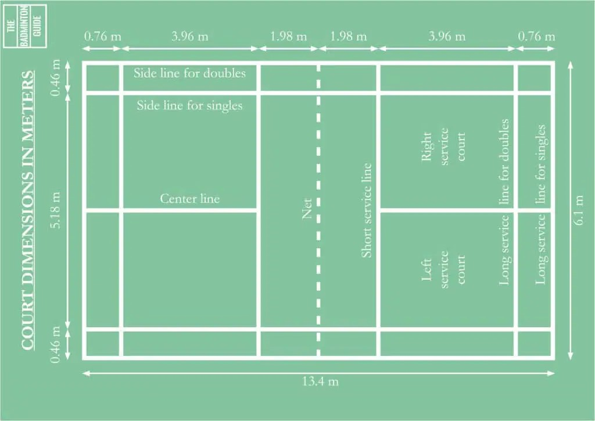
Court Dimensions
The badminton court is rectangular and it is divided by a net into two equal rectangles. The standard setting for a court is to be marked for both singles and doubles matches. The doubles court is wider than the singles one, but both are the same length. The only exception to that statement is that the doubles court has a different back serve line, which is shorter than the singles one. This often causes confusion for new players.
The lines marking the court are 40 mm (1.6 inches) wide (and preferably white or yellow in color). These lines are part of the area which they define, so both in the image above and in the data below the lines are included in the measurements. This means that, if the shuttle falls on the line, it is considered “in”. This is the same as in other sports such as tennis.
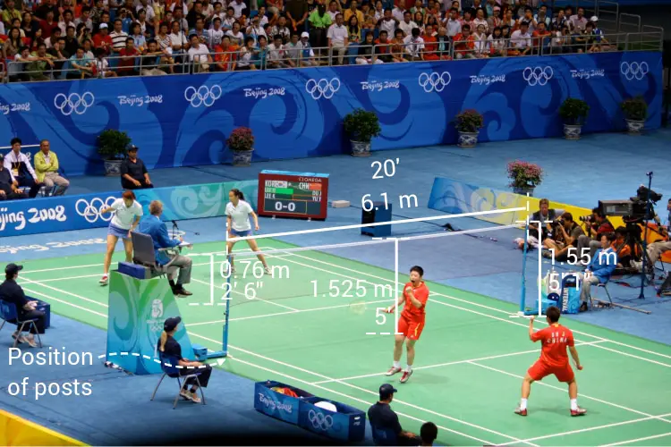
Post
The posts have to be 1.55 m (5 ft 1 inch) in height from the surface of the court. Moreover, when the net is fully stretched in the dimensions in the picture above, the posts have to remain vertical. In addition to that, the posts must be placed on the double sidelines irrespective of whether singles or doubles are being played.
Net
Regarding the net, the important rules are that the top of the net from the surface of the court shall be 1.525 (5 ft) meters at the center of the court and 1.55 m (5 ft 1 inch) over the side lines for doubles.
Change of Ends
Change of ends simply means that the teams or individuals need to change sides of the court as it is customary in most sports. This is to ensure that, if there is a little advantage on one of the sides, that advantage is lost by both sides being able to play there. The change of ends occurs always at the end of the first game. At the end of the second game, if the match goes to a third game, a change of end will also occur. While playing the third game and in order to keep equality, a change of ends will also occur in the middle of the third game, when the first of both sides reaches point number 11.
Service Rules
The most basic point for both types of matches is that you always serve diagonally as happens in other racket sports like tennis. So, if you are serving from the right side of the court, you will serve to the right side of the court of your opponent, thus diagonally.
In order to perform the service correctly, it is mandatory that the shuttle is below waist height when it is being hit in the service movement. The waist is considered to be an imaginary line around the body, at the same height as the lowest part of the server’s bottom rib.
Another important element is that the racket head and shaft should be pointing down while serving.
Fault Rule
In a rally, the shuttle must be hit by both teams alternately. It means that your team cannot hit the shuttle twice in a row, as that becomes a fault and the point is therefore lost. The same obviously stands for singles.
The service is always performed diagonally and the person staying in the diagonal side from the server is the receiver. If for whatever reason, while playing doubles, the partner of the receiver returns the service instead of the receiver, that will be considered a fault and the point will go to the serving team.
If you are playing and your opponent manages to hit you with the shuttle, it will be considered as your fault and the point will go to him or her. Whenever the shuttle touches any other object or person outside of the court, the fault is from the person that has hit the shuttle and therefore the point goes to the opponent.
Whenever a player touches the net or its supports with racket, body or dress. In this case, the fault is called instantly and the point goes to the opponent.
Badminton Grip
These 4 grips are all used for different shots, and it’s important to learn and practice each of them so that they become engrained into your game are easy to perform in a match:
Forehand Grip
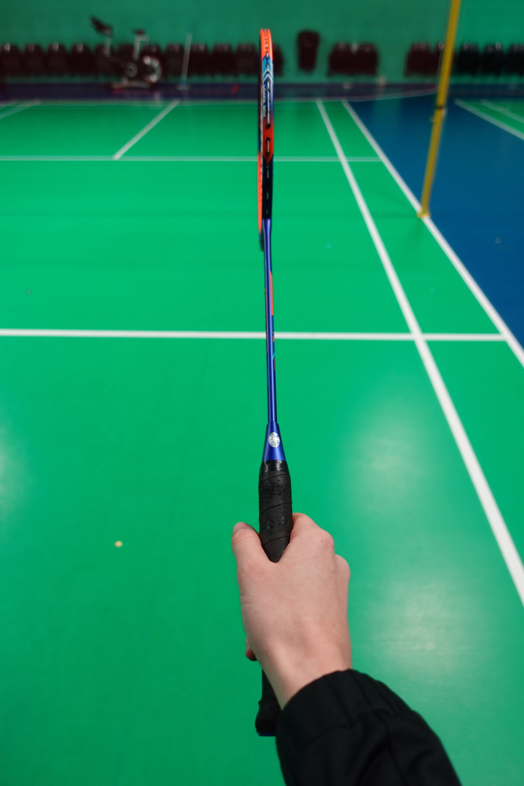
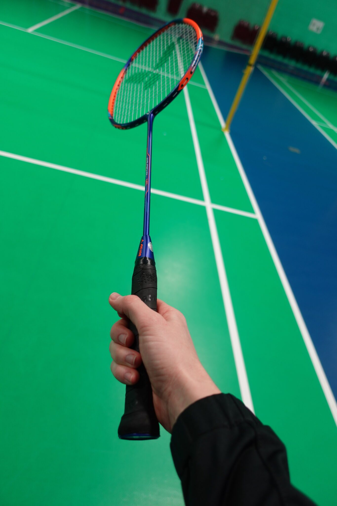
The easiest way to learn the forehand grip is to pretend you are shaking someone’s hand. As you can see from the photo, you want to have this ‘V Shape’, and have a little space between your index finger and middle fingers. Your fingers should be loosely around the grip, and this is important for all 4 grips. If you are gripping the racket too tightly, then it becomes much more difficult to quickly change between grips when necessary in the middle of a rally. A tight grip will also limit your ability to generate control and power in your shots.
Uses of Forehand grip:
Forehand clears, smashes and drops
Forehand drives
Forehand lifts
Forehand net shots
Backhand Grip
The easiest way to learn the backhand grip is to set up with your thumb on top of the wider section of the grip, with your strings facing the floor & ceiling like on the photo below. Your fingers should be relaxed around the side.
Uses of Backhand grip:
Backhand drives
Backhand lifts
Backhand net shots
Backhand serves
Doubles defence
Bevel Grip
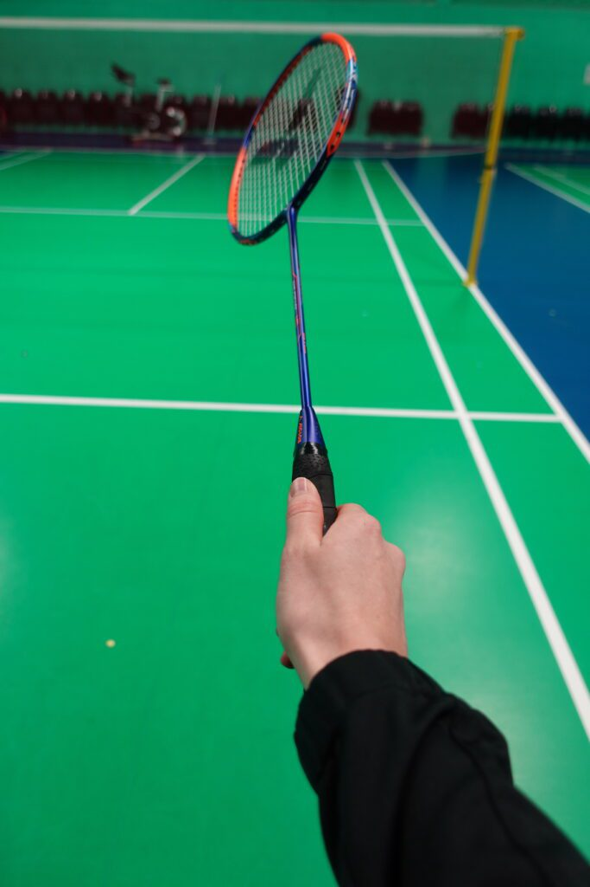
To learn the bevel grip you can start in a backhand grip and move your racket head round so that your strings are now facing diagonally, and your thumb is on the ridge / bevel. You would move the racket anti-clockwise from your backhand grip if you are right handed, and clockwise from this position if you are left handed.
You need to have a different thumb position depending on where you are making contact with the shuttle on your backhand side, this is why the bevel grip is used. If the shuttle is level with you or in front you would use a standard backhand grip with thumb on top like in the backhand grip section. If the shuttle is behind you (like it should be when taking a rear-court backhand shot), then you should have a bevel grip grip with your thumb further round. This allows you to play an accurate and powerful shot from this position.
Uses of Bevel grip:
Backhand rear-court shots (clears, drops and smashes)
Some forehand and backhand net shots (depending on your positioning)
Some singles defence if you are really stretched
Panhandle Grip
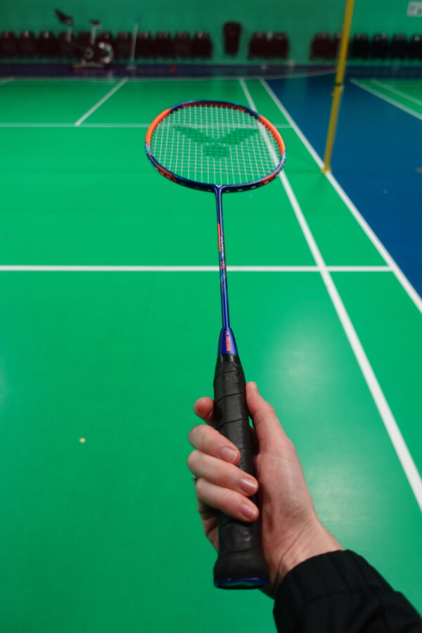
The panhandle grip is where you have the thumb on the side of the racket, pinching the sides with your thumb and fingers in the position shown below.
The panhandle grip is the one that actually comes most naturally to beginners because it’s easy to hit overhead shots with – but contrary to what many players use this for, the panhandle grip is used for:
Late backhand rear-court shots
Retrieving a net-cord on the backhand side
Some net kills or drives depending on your position and preference
Badminton Strokes
All the different shots in badminton can be divided into four different strokes:
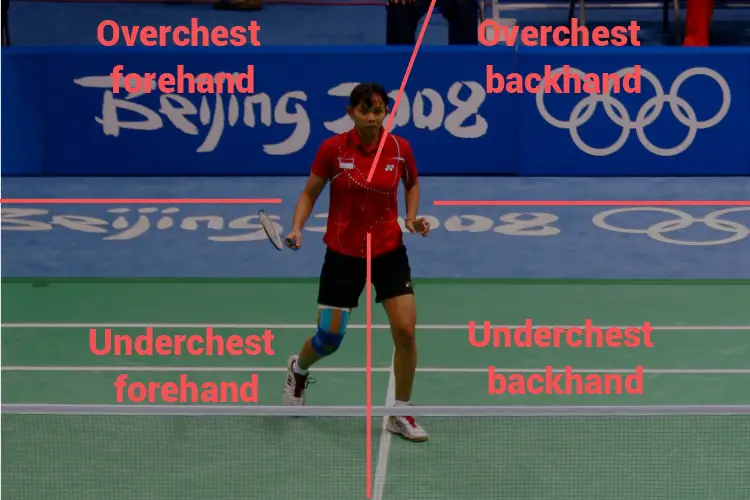
Under-chest forehand stroke
The under-chest forehand stroke is a stroke that, as the name suggests, is performed with the forehand grip and it is performed below the level of the chest. The under-chest strokes are usually defensive in nature because the shuttle needs to start with an upwards trajectory to go over the net.
The most common shots that are an under-chest forehand stroke are the following: Forehand net shot, forehand net lift shot, forehand defensive drive, forehand low serve, forehand high serve, forehand low defense shot and forehand high defense shot.
Over-chest forehand stroke
The over-chest forehand stroke is a stroke that, as the name suggests, is performed with the forehand grip and it is performed above the level of the chest.
The over-chest strokes tend to be offensive in nature because the shuttle can have a downwards trajectory to go over the net. The most common shots that are an over-chest forehand stroke are the following: Offensive forehand clear shot, defensive forehand clear shot, basic or slow forehand drop shot, slice or fast forehand drop shot, reverse slice drop shot, forehand smash, forehand jump smash, forehand offensive drive.
Under-chest backhand stroke
The under-chest backhand stroke is a stroke that, as the name suggests, is performed with the backhand grip and it is performed below the level of the chest.
The under-chest strokes are usually defensive in nature because the shuttle needs to start with an upwards trajectory to go over the net. The most common shots that are an under-chest forehand stroke are the following: Backhand net shot, backhand net lift shot, backhand defensive drive, backhand low serve, backhand high serve, backhand low defense shot and backhand high defense shot
Over-chest backhand stroke
The over-chest backhand stroke is a stroke that, as the name suggests, is performed with the backhand grip and it is performed above the level of the chest. These over-chest strokes are not as offensive as their forehand counterparts because the backhand shots tend to be weaker. However, this is only a limitation that people have and if you have a very powerful backhand, they can still be offensive shots. The most common shots that are an over-chest forehand stroke are the following: Offensive backhand clear shot, defensive backhand clear shot, basic or slow backhand drop shot, slice or fast backhand drop shot, backhand smash, backhand jump smash (not very common), backhand offensive drive, net kill shot and net brush shot
Badminton Footwork
Badminton footwork is one of the most important skills to learn in badminton. It is also one of the most complex ones due to how unnatural it comes to people to move around the court using specific steps. In addition to that, it is also one of the skills where guidance is less clear, as there are several different views on how is best to move (we will see them below). All this makes footwork a very complicated topic.
Basic Footwork Principles
Base Point
Is the position in the court we will always come back to after every single shot, while we wait for the opponent to hit the shot back. As soon as you hit the shuttle, you should do your best to go all the way back to the basepoint while the shuttle travels to the court of your opponent so that when your opponent hits the shuttle, you are in the center of your court. As a result of that, you are in the location where you can reach all the corners of the court with the minimum travel required.
In singles, that will be in the center of the court. In doubles, that will be the center of the area of the court you are covering.
Waiting position and split-step – The key to a fast reaction
The waiting position is the position you should be in while you are in the basepoint waiting for your opponent to hit the shuttle. It is important to highlight that the whole point of the waiting position advice is for you to be able to react as fast as possible to the shots of your opponent. You need to keep your center of gravity low by flexing your legs while you wait. That means that you don’t wait for the shuttle fully erected, but with your legs slightly flexed.
Once your opponent is about to hit the shuttle, you need to do what is called the split step. This is a critical point because the split step will help you in reacting much faster to the shot. In the split step, you need to do a little jump from your waiting position. However, more than jumping up, the idea is to bring your center of gravity a bit lower.
In addition to that, your feet should not be flat on the floor, but with the heels slightly raised, so that your body weight is held by your toes. This is done in order to allow for a faster movement reaction.
Body position – Key to a good balance
Keep a good body balance so that you can hit the shuttle in a consistent way and you can also recover to the base point as fast as possible. The three keys to a good balance as far as body position is concerned are the following:
Keep your center of gravity low
Use your non-racket arm to balance your movements
Keep your trunk always straight
Focus on the technique and not on the speed
The last principle you need to learn is that, while improving your footwork, it is critical that you focus on making it correctly and not on making it fast. If you focus on going fast, you will start using shortcuts that help at the moment they are being practiced, but that will become a burden further down the line.
So, until these movements become muscle memory and you can do them without even thinking about them, focus on making them correctly, even though you feel you will reach the point faster if you just had run. Over time, once your body starts getting used to the movements, you will start to increase the speed and be able to do it fast and without thought. Once you get it in your subconscious and in your muscle memory, you will be able to perform it without having to think about it.
6 main points of the court
These are the four corners and the two sides, as below:
Forehand front corner
Is the corner where you will hit the shuttle with your forehand grip. If you are right-handed, that would be the right-hand corner (if you are looking towards the net). If you are left-handed, the forehand front corner would be the left-hand corner (if you are looking towards the net).
Two running steps
Starts with moving your non-racket leg forward in front of your leg racket, and then end up the movement by landing on your racket leg, extending your racket arm at the same time in order to reach the shuttle.
Once you have hit the shuttle and in order to return to the base, you should push back your racket leg so it is further from the net than your non-racket leg. The last step is to move your non-racket leg back.
Three running steps crossing
Starts the movement by moving your racket leg front, then crossing the non-racket leg through the back and finish again with the extension of the racket leg, while extending your arm to hit the shuttle. I have heard opinions against this technique because it makes it easier for the player to trip over if not done properly.
Chasse steps
In order to move with chasse steps to the forehand front corner, you need to move both feet at the same time, while bringing them closer in the air during the movement. In your landing, you will land with your non-racket leg back and your racket leg in front. They need to be fairly apart, but with this type of movement, you will not achieve the same extension that you do with the running steps. The chasse steps are used in certain situations, for example when wanting to finish a point with a kill on the net.
Backhand front corner
For your backhand front corner, the same type of principles holds true. However, in this case, the crossing version is much less used because it is much easier to reach the corner with only two steps.
Two running steps
the same logic as the forehand front corner is used. However, due to the fact that you are hitting the shuttle with your backhand grip, it becomes much easier to do this movement and to reach further. Therefore, this is pretty much the standard version for this movement.
So, to perform a running step, first, move your non-racket leg in front and then extend your racket leg while also extending your racket arm in order to hit the shuttle. To go back to the center, move back your racket leg first, then move your non-racket leg and finish aligning yourself with a split step.
Three running steps crossing
Start moving your racket leg while rotating your body so your hips are facing the side of the court, then cross over with your non-racket leg on the back of your racket leg and finish by extending your racket leg forward while also extending your arm to hit the shuttle.
Chasse steps
The chasse steps for the backhand front corner require a bit more of starting explanation, so we will first clarify that. Bear in mind that with the chasse steps going to the backhand front corner, you will need to rotate your body so you will be not facing the net but more the side of the court.
Therefore, you either need to make a normal step before you can do the chasse steps or you need to change your position in the center. Due to that, it is not very common footwork in singles, but it is can be used if you are playing on that side of the net. It is more used in doubles, where you have a bit less court to cover.
Forehand side
The footwork for the sides is not as complicated as for the front, mainly because the points you want to reach are closer to the center of the court.
One running steps
In this version, you only do one step to reach the side of the court. This can work well if the shuttle is directed close to your center position. In order to perform this movement, you need to just move your racket leg to the side while also extending your arm. To go back to the center, bring back your racket leg and then get ready with a split step.
Two running steps crossing
The two steps version of this movement is similar to the three steps movement we explained for the forehand front corner but eliminating the first step. Therefore, you start by crossing your non-racket leg back from your racket leg and you finish the movement by extending your racket leg. To come back to the center, perform a normal chasse step.
Chasse steps
For this, the same logic as the forehand front corner applies. Jump forward and bring both legs closer while jumping, and then land first on your non-racket leg and then on your racket leg. To go back, just repeat the chasse steps but moving towards the center.
Backhand side
For the backhand side, the movements are a bit different than they are for the other corners. Here, due to being close to your center and due to the fact that is your backhand, there are basically two movements that are widely used and accepted.
One step version with your racket leg
This type of movement is used when the shuttle is going to your side but close to the sideline. Therefore, you need to turn your body while at the same time extending your racket leg. With only one step, you will easily reach the line so two steps are never required or used in this location of the court. To come back, simply bring your racket leg back and then do a slip step to get in position.
One step version with your non-racket leg
This movement is more used when the shuttle is going to land not too close to the sideline, but more towards the center of the court. It has the advantage of being faster to do and easier to recover from, but it has the disadvantage of a smaller reach. In order to do this movement, simply move laterally your non-racket leg, while keeping the trunk of your body facing the net. To go back to the center, simply push back your non-racket leg and you will be in the center.
Forehand back-court corner
Things get complicated again when it comes to the back side of the court. In here, there are many more options and subtleties, but I believe they can be grouped into three main footwork types.
Three steps crossing with scissor movement
In this movement, you first move your racket leg, then you cross your non-racket leg on the back of your racket leg and finally you move your racket leg forward towards the back of the court. The key here is that you, in your final movement, do not extend the racket leg too much, but only a bit so you are in a very straight position when hitting the shuttle. When doing so, you need to bring your non-racket leg backwards so, by the end of your hitting movement, your non-racket leg is on the back of your body and you can use it to impulse yourself towards the center of the court.
Three steps crossing with standard landing
This last type of footwork is very similar to the first type. The difference lies in the last step. Once you have crossed your non-racket leg, then you do extend your racket leg forward, in a similar manner as you would do on a forehand front corner.
With this type of footwork, you will typically hit your shuttle at around your shoulders height. This makes it, generally, a defensive shot. Moreover, because of the way your body is positioned, you will not be able to use any of the inertia from your body to increase the speed of the shuttle. For that reason, it will, for some people, narrow down the types of shots they can do from that position.
Chasse steps with a jump
The other typical footwork used for this corner is a chasse step finished with a jump. In order to perform this footwork, you must first perform a standard chasse step while at the same time rotating slightly your body in order to move efficiently. Once the chasse step is completed, then you jump towards the back of the court and you hit the shuttle while jumping.
Backhand back-court corner
This is the last corner and probably the trickiest one of all, mainly due to the fact that you can hit the shuttle here either with your backhand grip or with your forehand grip.
Chasse step with scissor movement for a forehand grip shot
The first type of footwork is a chasse step which ends up with a scissor movement. To start, you need to rotate your body so that your hips, instead of facing the net are facing the side of the court. In order to do that, you need to bring your racket leg back.
Once you have rotated your body, you then do a chasse step towards the back of the court. Professionals, instead of doing a standard chasse step, do more of a jump with their non-racket leg, but the underlying logic is the same. After this step, you hit your shuttle while you bring your non-racket leg behind, with what is called a scissor movement. This is the same type of movement that we explained with the forehand back-court corner.
Chasse step with a jump for a forehand grip shot
In this footwork, you reach the corner by doing a chasse step and then jumping. This is the same footwork that was also explained for the forehand back-court corner. The difference is that here, due to it being the backhand back-court corner, you will start the chasse step with your non-racket leg without rotating your body at all and, when landing, you will land also in your non-racket leg. To come back to the center, just come back using the chasse steps.
Two steps footwork for a backhand shot
The last one is the footwork used if you are going to hit a backhand shot. This is not the recommended approach because your backhand shot is most likely much weaker than your forehand shot.
In this footwork, you first move your non-racket leg towards the back and then you land with your racket leg. While moving your racket leg, you should also start performing the move with your racket in order to hit the shuttle precisely at the moment you land with your foot on the court.
Once you have hit the shuttle, your body will not be facing the net but the back of the court. In order to return to the center, rotate your body while also bringing the racket leg to the front and then reach the center using a chasse step.
Badminton Shots
Shots from the back of the court
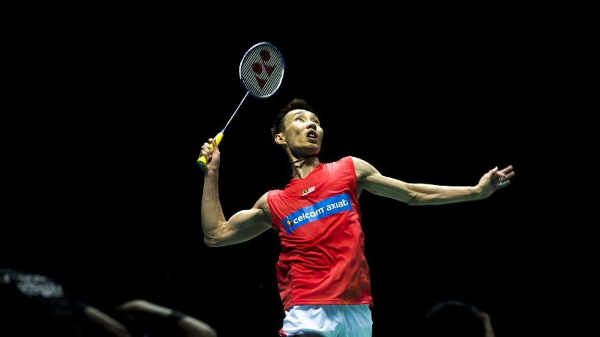
Clear
A shot is called a clear when you send the shuttle from the back of your court to the back of your opponent’s court.
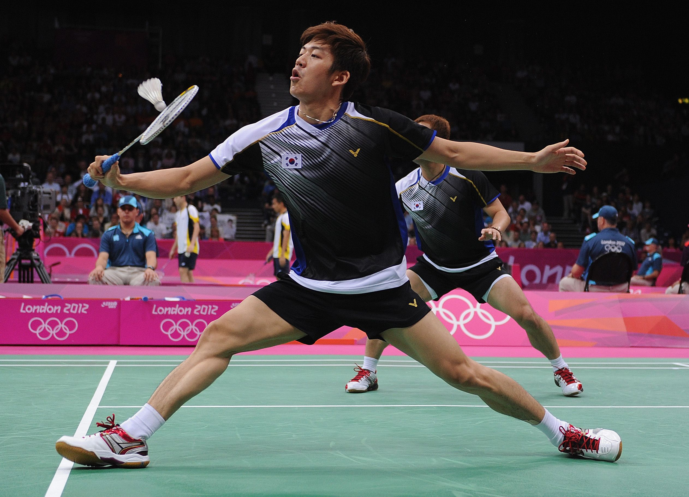
Drop shot
A shot is called a drop shot when you send the shuttle from the back of your court to the front of your opponent’s court (near the net).
Smash
A shot is called a smash when you send the shuttle from the back of your court to the center of your opponent’s court, with a fully descending trajectory.
Jump smash
A shot is called a jump smash when a smash as discussed in the previous section is performed while jumping.
Shots from the center of the court
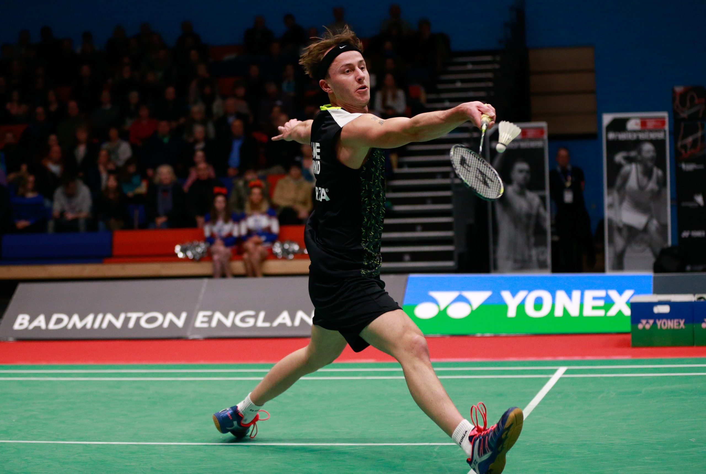
Service
A shot is called a service when you hit the first shot of a rally. It is the only shot that you have to make every single point (as long as you are the one serving).
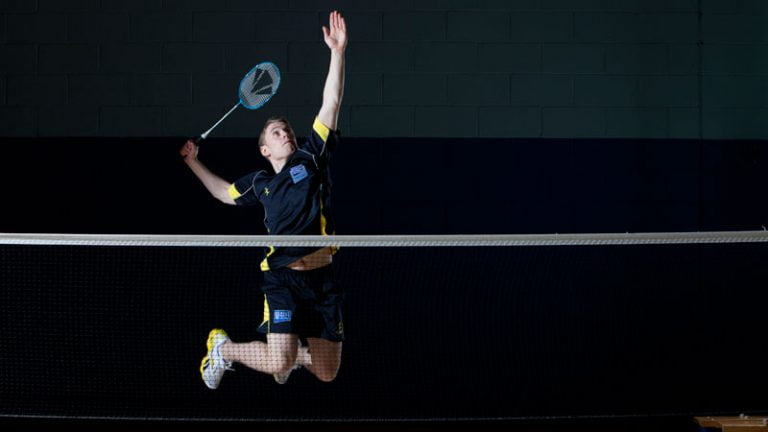
Drive
A shot is called a drive when you hit the shuttle from the middle of the court and you direct it to the middle of your opponent’s court.
Defense shot
A shot is called a defense shot when you hit the shuttle from the center of your court and you send it to the back of your opponent’s court with an upward direction.
Shots from the front of the court
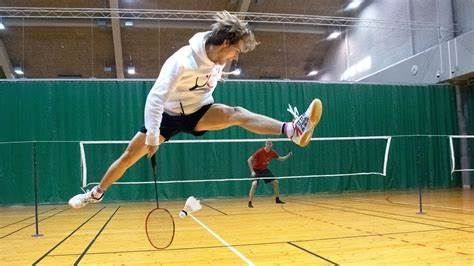
Net shot
A shot is called a net shot whenever you hit the shuttle from the front of your court and you send it to the front of your opponent’s court.
Net lift shot
A shot is called a net lift shot when you hit the shuttle from the front of your court to the back of your opponent’s court with an upward direction.
Net kill shot
A shot is called a net kill shot when you hit the shuttle from the front of your court and you hit it in a downwards direction.
Net brush shot
A shot is called a net brush shot when you hit the shuttle from the front of your court with a motion similar to the one of a windshield wiper. This shot is also sometimes called net kill swipe shot or net swipe shot.
Badminton Strategies
If you are looking for a competitive edge in badminton, choosing the right tactics can go a long way in maximizing your current skill set. This way, you will have a better chance to beat opponents that would usually be outside of your reach.
Know your strengths and weaknesses and those of your opponent
Before you can start thinking about which tactics are the best for the match at play, you should have a clear understanding of which are your strengths and which are your weaknesses. This is the most important step to take to make sure you choose the right tactics.
The second step is knowing your opponent strengths and weaknesses. This is also critical to know because if your opponent has a strength that is the same as yours, you will not be able to use tactics that exploit that strength against him or her.
Endurance and quick footwork
If your main skills are that you are in great physical condition and you can move around the court with ease and speed, you should focus your game on trying to lengthen the rallies as much as possible. This way you can tire out your opponent, whose game will worsen dramatically once he or she doesn’t have enough stamina to keep playing at his or her normal level.
Powerful smash
If your main skill is a powerful smash, you will be happy to hear that it is one of the most important skills to have in badminton. Why? Because it is the best way to finish the points with a winner.
However, it is a shot that can become dangerous for yourself if you overuse it when playing singles. As there is a lot of court to cover and you are playing alone, you should only use the smash shot when you are in a comfortable position and you are sure that you have a good chance of finishing the rally with that shot or in the next one or two.
Targetting the backhand on the end of the court
A very simple and effective tactic for singles is to target with your shots the backhand shot in the back of the court. Why is that? Because it is usually the shot that most people struggle with.
Net play
Net play is a very risky move, as the precision needed there in order not to lose a rally is much higher. With a clear shot, you don’t need that much precision in order to stay in the game. With a net shot, however, you better make sure it is precise enough or you will end up losing the point in a few shots.
Powerful defense(Doubles)
At the amateur level, sometimes, the importance of keeping the initiative in doubles is not understood enough. Apart from special exceptions, you are calling trouble if you pretend to win doubles matches only defending. Therefore, making sure you have the initiative as much as possible is the most basic of tactics when playing doubles.
Target your attacks to the weakest opponent(Doubles)
A good tactic to use in doubles is targetting your attacks to the weakest opponent, or at least the one with the weakest defence skills. By focusing your attacks towards the weakest player, you will increase your chances of winning the match.
Smash in the middle of the two players(Doubles)
Another good tactic is to direct your smash to the middle of the two opponents, as this can sometimes lead to confusion as to who should return your shot.